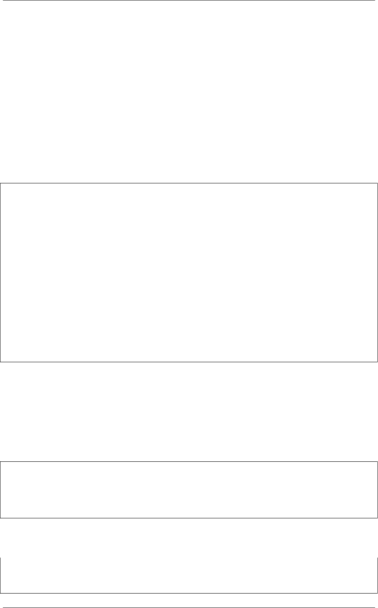

《Python Cookbook》第三版, Release 2.0.0
4.11 2.11 删除字符串中不需要的字符
4.11.1 问题
你想去掉文本字符串开头，结尾或者中间不想要的字符，比如空白。
4.11.2 解决方案
strip() 方法能用于删除开始或结尾的字符。 lstrip() 和rstrip() 分别从左和
从右执行删除操作。默认情况下，这些方法会去除空白字符，但是你也可以指定其他
字符。比如：
>>> # Whitespace stripping
>>> s='hello world \n'
>>> s.strip()
'hello world'
>>> s.lstrip()
'hello world \n'
>>> s.rstrip()
'hello world'
>>>
>>> # Character stripping
>>> t='-----hello====='
>>> t.lstrip('-')
'hello====='
>>> t.strip('-=')
'hello'
>>>
4.11.3 讨论
这些 strip() 方法在读取和清理数据以备后续处理的时候是经常会被用到的。比
如，你可以用它们来去掉空格，引号和完成其他任务。
但是需要注意的是去除操作不会对字符串的中间的文本产生任何影响。比如：
>>> s='hello world \n'
>>> s=s.strip()
>>> s
'hello world'
>>>
如果你想处理中间的空格，那么你需要求助其他技术。比如使用 replace() 方法
或者是用正则表达式替换。示例如下：
>>> s.replace(' ','')
'helloworld'
>>> import re
4.11. 2.11 删除字符串中不需要的字符 55